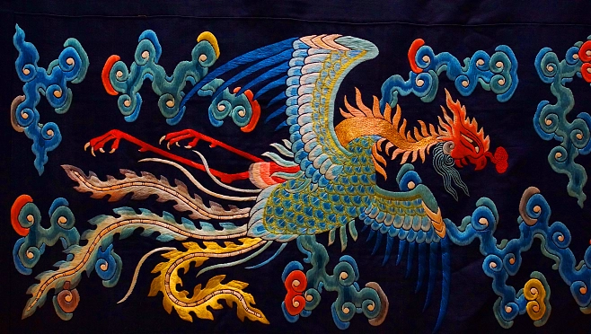

刺绣
刺绣是针线在织物上绣制的各种装饰图案的总称。刺绣分丝线刺绣和羽毛刺绣两种。就是用针将丝线或其他纤维、纱线以一定图案和色彩在绣料上穿刺，以绣迹构成花纹的装饰织物。它是用针和线把人的设计和制作添加在任何存在的织物上的一种艺术。刺绣是中国民间传统手工艺之一，在中国至少有二三千年历史。中国刺绣主要有苏绣、湘绣、蜀绣和粤绣四大门类。刺绣的技法有：错针绣、乱针绣、网绣、满地绣、锁丝、纳丝、纳锦、平金、影金、盘金、铺绒、刮绒、戳纱、洒线、挑花等等，刺绣的用途主要包括生活和艺术装饰，如服装、床上用品、台布、舞台、艺术品装饰。 刺绣，古代称之为针绣，是用绣针引彩线，将设计的花纹在纺织品上刺绣运针，以绣迹构成花纹图案的一种工艺。古代称“黹”、“针黹”。因刺绣多为妇女所作，故属于“女红”的一个重要部分。刺绣是中国古老的手工技艺之一，中国的手工刺绣工艺，已经有2000多年历史了。据《尚书》载，远在4000多年前的章服制度，就规定“衣画而裳绣”。至周代，有“绣缋共职”的记载。湖北和湖南出土的战国、两汉的绣品，水平都很高。唐宋刺绣施针匀细，设色丰富，盛行用刺绣作书画，饰件等。明清时封建王朝的宫廷绣工规模很大，民间刺绣也得到进一步发展，先后产了苏绣、粤绣、陇绣、湘绣、蜀绣，号称“五大名绣”。此外还有顾绣，京绣、瓯绣、鲁绣、闽绣、汴绣、汉绣、麻绣和苗绣等。